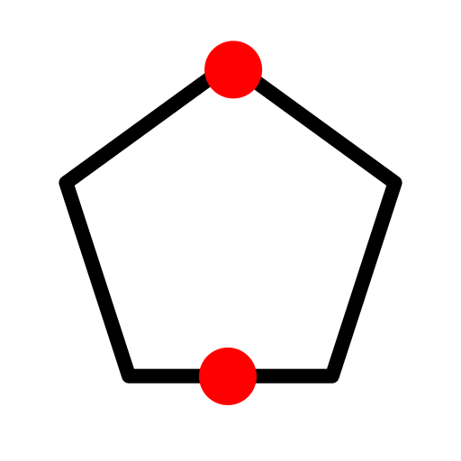

Polygon (Seite, Seite) (P, G, 4)
Werkzeugleiste / Symbol:


Menü: Zeichnen > Form > Polygon (Seite, Seite) (P, G, 4)
Kommandos: polygonss | pg4
Beschreibung:
Konstruiert ein regelmässiges Polygon mit Hilfe von zwei gegenüberliegenden
Seiten oder Ecken.
Vorgehensweise:
- Geben Sie den Grad des Polygons (Anzahl Ecken / Kanten) in der
Optionenwerkzeugleiste ein. Gültige Zahlen sind 3 bis 99.
- Wählen Sie die Option Ecke zu Ecke um das Polygon über zwei
gegenüberliegende Ecken zu definieren.
- Bestimmen Sie die erste Ecke oder Mitte einer Seite des Polygons mit der
Maus oder geben Sie eine Koordinate in die Kommandozeile ein.
- Bestimmen Sie die zweite, gegenüberliegende Ecke oder Mitte einer Seite
des Polygons.